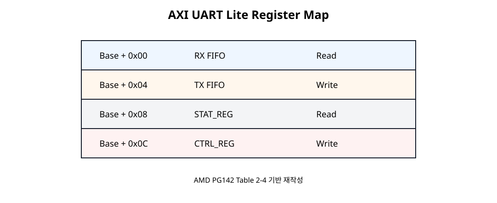

PC → FPGA
터미널 문자가 B18 RX로 들어온다.
Basys3 SoC + NPU · SoC 07
Basys3의 FT2232HQ USB-UART Bridge와 AXI UART Lite를 연결하고, PC에서 입력한 문자를 MicroBlaze V가 RX FIFO에서 읽은 뒤 TX FIFO로 다시 전송한다. Memory Map, AXI4-Lite, FIFO, UART 직렬 통신이 하나의 실습으로 연결된다.
터미널 문자가 B18 RX로 들어온다.
RX FIFO를 읽고 같은 Byte를 TX FIFO에 쓴다.
A18 TX를 통해 같은 문자가 터미널로 돌아온다.
터미널에 A를 입력하면 FPGA가 A를 수신하고 MicroBlaze V가 같은 Byte를 다시 송신한다. Terminal Local Echo는 끄고 실제 FPGA Echo만 보이도록 한다.
FT2232HQ TXD → FPGA B18(RX), FPGA A18(TX) → FT2232HQ RXD. J4는 JTAG와 UART를 함께 제공한다.
공식 PDF 원문 · 7쪽 직접 열기 ↗| 기능 | FPGA Pin | Top Port |
|---|---|---|
| PC → FPGA Receive | B18 | RsRx |
| FPGA → PC Transmit | A18 | RsTx |
J4 하나로 FPGA Programming/JTAG와 USB-UART를 함께 사용할 수 있으며 두 기능은 독립적으로 동작한다.
MicroBlaze V의 Peripheral AXI 경로를 활성화하여 IP를 연결한다. 하드웨어 변경 후 XSA와 V용 Platform/BSP를 갱신하고 생성된 xparameters.h의 심볼을 사용한다.
AXI4-Lite, RX/TX FIFO, 상태·제어 레지스터, Baud Rate Generator, RX/TX 제어 관계.
공식 PDF 원문 · 5쪽 직접 열기 ↗RX FIFO와 TX FIFO는 각각 16-character 깊이를 가지며 AXI4-Lite Register 접근으로 CPU가 데이터를 읽고 쓴다.
| 항목 | SoC 07 설정 |
|---|---|
| Baud Rate | 115200 bit/s |
| Data Bits | 8 |
| Parity | None |
| Stop Bit | 1 |
| Flow Control | None |
115200 8N1은 PC 터미널과 AXI UART Lite 양쪽 설정이 반드시 동일해야 한다.
Block Design에서 AXI Uartlite를 검색하여 axi_uartlite_0을 추가한다.
MicroBlaze V → SmartConnect 구조를 그대로 사용한다.
이번 장에서는 Polling만 사용하므로 Interrupt 연결은 보류한다.
| 항목 | 설정 |
|---|---|
| AXI CLK Frequency | IP Integrator 연결값 · 현재 System Clock 100 MHz |
| Baud Rate | 115200 |
| Data Bits | 8 |
| Parity | No Parity |
Baud Rate, Data Bits, Parity는 Hardware Build 시 고정되는 설정이며 일반적인 Software API로 Runtime 변경하는 구조가 아니다.
2017년 공개 문서의 화면이므로 Vivado 2024.2 GUI와 다를 수 있다. 실제 설정은 현재 Vivado 창에서 확인한다.
공식 PDF 원문 · 15쪽 직접 열기 ↗s_axi_aresetn은 Active-Low Reset이다.
| AXI UART Lite | 외부 Port | 방향 |
|---|---|---|
rx | RsRx | Input |
tx | RsTx | Output |
RsRx는 PC가 보낸 데이터를 FPGA가 받는 입력이고, RsTx는 FPGA가 PC로 보내는 출력이다.## Basys3 USB-RS232 Interface
## Digilent Basys-3-Master.xdc 원본 핀 기준
set_property -dict { PACKAGE_PIN B18 IOSTANDARD LVCMOS33 } [get_ports RsRx]
set_property -dict { PACKAGE_PIN A18 IOSTANDARD LVCMOS33 } [get_ports RsTx]
기존 Clock/Reset XDC는 그대로 유지하고 UART 핀 두 줄만 추가한다.
axi_uartlite_0/S_AXI에 실제 Base Address를 할당한다. 문서에서는 임의 Base Address를 고정하지 않는다.
Classic Flow는 일반적으로 XPAR_UARTLITE_0_BASEADDR, SDT Flow는 XPAR_XUARTLITE_0_BASEADDR 형태의 Base Address Macro를 사용한다.

| Offset | Register | Access | 역할 |
|---|---|---|---|
+0x00 | RX FIFO | Read | 수신 Byte 읽기 |
+0x04 | TX FIFO | Write | 송신 Byte 쓰기 |
+0x08 | STAT_REG | Read | FIFO·Error 상태 |
+0x0C | CTRL_REG | Write | FIFO Reset·Interrupt Enable |
RX FIFO는 16-entry이며 수신된 Character를 저장한다. 8-bit 설정에서는 유효 Data가 bit [7:0]에 들어온다.
수신 문자 데이터는 8-bit 설정 기준 하위 8비트에 놓인다.
공식 PDF 원문 · 9쪽 직접 열기 ↗TX FIFO도 16-entry이며 CPU가 전송할 Byte를 쓴다.
XUartLite_SendByte()는 FIFO가 쓸 수 있을 때까지 확인한 뒤 1 Byte를 전송한다.송신 데이터 역시 하위 8비트에 기록한다.
공식 PDF 원문 · 10쪽 직접 열기 ↗| Bit | 이름 | 의미 |
|---|---|---|
| 7 | Parity Error | Parity 오류 |
| 6 | Frame Error | Stop Bit 오류 |
| 5 | Overrun Error | RX FIFO Full 상태에서 새 Character 수신 |
| 4 | Interrupt Enabled | Interrupt Enable 상태 |
| 3 | TX FIFO Full | 송신 FIFO 가득 참 |
| 2 | TX FIFO Empty | 송신 FIFO 비어 있음 |
| 1 | RX FIFO Full | 수신 FIFO 가득 참 |
| 0 | RX FIFO Valid Data | 수신할 Data가 존재 |
RX FIFO 유효 데이터(bit 0), TX FIFO Full(bit 3) 등 주요 상태 위치.
공식 PDF 원문 · 11쪽 직접 열기 ↗| Bit | 기능 |
|---|---|
| 4 | Interrupt Enable |
| 1 | RX FIFO Reset/Clear |
| 0 | TX FIFO Reset/Clear |
이번 코드에서는 시작할 때 0x03을 써서 RX/TX FIFO를 비우고 bit4는 0으로 유지하여 Interrupt를 사용하지 않는다.
bit 0은 TX FIFO 초기화, bit 1은 RX FIFO 초기화, bit 4는 인터럽트 활성화.
공식 PDF 원문 · 10쪽 직접 열기 ↗Interrupt Controller가 아직 없어도 동작하며 통신 경로를 확인하기 쉽다.
새 XSA를 적용한 뒤 xparameters.h에서 UART Lite Base Address Macro가 생성되었는지 확인한다.
아래 코드는 이번 실습을 위해 작성한 교육용 Polling Echo 코드이며, Base Address Macro의 Classic/SDT 구분은 AMD 공식 low-level example과 동일한 방식이다.
#include "xparameters.h"
#include "xuartlite_l.h"
#include "xil_types.h"
/*
* SoC 07 - AXI UART Lite Polling Echo
*
* Hardware setting:
* Baud Rate : 115200
* Data Bits : 8
* Parity : None
* Stop Bit : 1
*
* PC terminal:
* 115200 8N1
* Flow control : None
* Local echo : Off
*/
#ifndef SDT
#define UARTLITE_BASEADDR XPAR_UARTLITE_0_BASEADDR
#else
#define UARTLITE_BASEADDR XPAR_XUARTLITE_0_BASEADDR
#endif
volatile u8 last_rx = 0U;
volatile u32 rx_count = 0U;
volatile u32 tx_count = 0U;
static void uart_puts(const char *text)
{
while (*text != '\0') {
XUartLite_SendByte(UARTLITE_BASEADDR, (u8)*text);
tx_count++;
text++;
}
}
int main(void)
{
/*
* CTRL_REG bit1 = RX FIFO reset
* CTRL_REG bit0 = TX FIFO reset
* 0x03 : 두 FIFO를 모두 비운다.
* Interrupt bit4는 0이므로 Polling 방식이다.
*/
XUartLite_WriteReg(
UARTLITE_BASEADDR,
XUL_CONTROL_REG_OFFSET,
0x03U
);
uart_puts("\r\nAXI UART Lite Echo Ready\r\n");
uart_puts("Type characters. Received data will be echoed.\r\n> ");
while (1) {
/* RX FIFO에 문자가 들어올 때까지 Blocking 대기 */
last_rx = XUartLite_RecvByte(UARTLITE_BASEADDR);
rx_count++;
/* 받은 1 Byte를 그대로 PC로 다시 전송 */
XUartLite_SendByte(UARTLITE_BASEADDR, last_rx);
tx_count++;
}
return 0;
}
| Software | Hardware 동작 |
|---|---|
XUartLite_RecvByte(Base) | STATUS bit0 확인 → Base+0x00 RX FIFO Read |
XUartLite_SendByte(Base, ch) | STATUS bit3 확인 → Base+0x04 TX FIFO Write |
XUartLite_WriteReg(...CTRL..., 0x03) | Base+0x0C에 Write → RX/TX FIFO Clear |
기존 터미널 도구를 사용한다. 장치명은 PC 환경마다 달라질 수 있으므로 먼저 확인한다.
## 1. UART 장치 확인
ls -l /dev/serial/by-id/
## 2. minicom 설치
sudo apt install minicom
## 3. 예시 실행
## 실제 장치명은 /dev/serial/by-id/ 결과에 맞춘다.
minicom -D /dev/ttyUSB1 -b 115200| Terminal 설정 | 값 |
|---|---|
| Baud | 115200 |
| Data | 8 bit |
| Parity | None |
| Stop | 1 |
| Hardware Flow Control | Off |
| Software Flow Control | Off |
| Local Echo | Off |
ls -l /dev/serial/by-id/는 연결된 Serial 장치를 사람이 읽기 쉬운 이름으로 확인하는 명령이다. minicom은 해당 Serial Port를 115200 bit/s로 열어 문자 송수신을 확인한다.
FPGA Program → PC Terminal 연결 → ELF Run 순서로 진행한다. 정상이라면 시작 문자열이 나타난다.
AXI UART Lite Echo Ready
Type characters. Received data will be echoed.
> 이후 키보드에서 A, B, 1을 입력하면 같은 Character가 FPGA를 거쳐 되돌아온다.
| 변수 | 확인 내용 |
|---|---|
last_rx | 마지막으로 수신한 ASCII Byte |
rx_count | 수신 Byte 수 |
tx_count | 송신 Byte 수 · 시작 안내 문자열도 포함 |
예를 들어 A 수신 후 last_rx = 0x41인지 확인할 수 있다.
SoC 05의 AR/R Read와 AW/W/B Write가 UART FIFO 접근으로 실제 적용된다.
| 증상 | 원인 후보 | 확인 |
|---|---|---|
| 아무 글자도 안 보임 | TX Pin·Baud·XSA 문제 | A18, 115200, 최신 Platform |
| 입력해도 Echo 없음 | RX Pin 또는 Terminal 장치 오류 | B18, 실제 /dev/tty* |
| 문자가 깨짐 | Baud / Data / Parity 불일치 | 115200 8N1 양쪽 동일 |
| 문자가 두 번 보임 | Terminal Local Echo On | Local Echo Off |
| Build Macro 없음 | XSA/Platform 미갱신 또는 Instance 명칭 차이 | xparameters.h |
| 수신 첫 글자가 이상함 | 기존 FIFO Data | 시작 시 FIFO Clear 확인 |
| RX/TX가 서로 바뀜 | 방향 관점 혼동 | B18=FPGA RX, A18=FPGA TX |
AMD PG142 Chapter 5의 공식 예제는 MicroBlaze V 없이 AXI Traffic Generator(AXI 트래픽 제너레이터, 시험용 AXI 접근 생성기)가 AXI UART Lite에 데이터를 기록하는 별도 설계이다.
원본의 Clock Generator, AXI Traffic Generator, DUT(검증 대상 IP) 관계. KC705 기준 예제이며 Basys3 SoC Block Design과 동일한 회로가 아니다.
공식 PDF 원문 · 18쪽 직접 열기 ↗Vivado에서 AXI UART Lite IP의 Open IP Example Design 기능을 선택한다. 원본 SoC 프로젝트와 분리된 별도 예제 프로젝트로 연다.
ATG가 AXI4-Lite를 통해 TX FIFO에 ASCII 0x41을 쓴다. UART 송신 포트에서는 문자 A가 출력된다.
예제에는 <component_name>_exdes.vhd, clock_gen.vhd, atg_*.coe가 포함된다. 이 파일들은 공식 예제 생성 시 제공되는 것이며 이 교재에서 별도로 작성한 MicroBlaze 프로그램이 아니다.
PG142 Chapter 6은 예제 설계에 포함된 VHDL Test Bench(테스트벤치, 회로를 자동 시험하는 코드)를 설명한다. 실제 FPGA 다운로드와 별도로 UART 송신 동작을 시뮬레이션한다.
원본 구조: Clock & Reset Generation → 공식 예제 설계 → Test Status. 테스트벤치는 UART TX 결과가 ASCII 문자 A(0x41)인지 검사한다.
공식 PDF 원문 · 21쪽 직접 열기 ↗| 항목 | 원문 기준 동작 |
|---|---|
| Test Bench 파일 | <component_name>_exdes_tb.vhd · 공식 예제 프로젝트의 Simulation Sources |
| 클록 | 테스트벤치가 200 MHz 입력 클록 생성 · 예제 내부에서 100 MHz AXI 클록 생성 |
| 리셋 | 초기 Reset 신호 생성 |
| 입력 자극 | ATG가 AXI4-Lite Write를 사용하여 TX FIFO에 0x41 기록 |
| 출력 검사 | 직렬 TX를 수신·변환하여 ASCII A인지 비교 |
| 기대 결과 | Test Completed Successfully · 실패 또는 시간 초과는 별도 진단 |
독립적으로 생성한 공식 Example Design 프로젝트에서 *_exdes_tb.vhd 파일을 확인한다.
Vivado의 Run Simulation → Run Behavioral Simulation에서 공식 테스트벤치를 실행한다. 실제 2024.2 화면은 실습 시 확인한다.
clock_in, reset, tx 신호의 파형과 시뮬레이션 로그를 확인한다. 종료 메시지가 성공이면 공식 예제의 송신 경로가 검증된 것이다.
A를 시험한다. Basys3 + MicroBlaze V의 PC 입력 문자 Echo를 검증하는 실습과 같지 않다. 실제 보드 결과와 공식 예제의 예상 결과를 혼동하지 않는다.| 문서 | 확인 항목 |
|---|---|
| AMD PG142 · AXI UART Lite v2.0 | Block Diagram, FIFO, Register Map, Status/Control, Baud/Data/Parity |
| AMD/Xilinx UART Lite Driver | 16-byte FIFO, Hardware 고정 Baud/Parity/Data Bits, Polling/Interrupt Driver |
| XUartLite Low-Level API | RecvByte, SendByte, Status 검사 |
| AMD embeddedsw · Low-Level Example | Classic/SDT Base Address Macro와 Polling 구조 |
| Digilent Basys 3 Reference Manual | FT2232HQ USB-UART, J4, B18/A18, LD17/LD18 |
| Digilent Basys-3-Master.xdc | B18 RsRx, A18 RsTx |